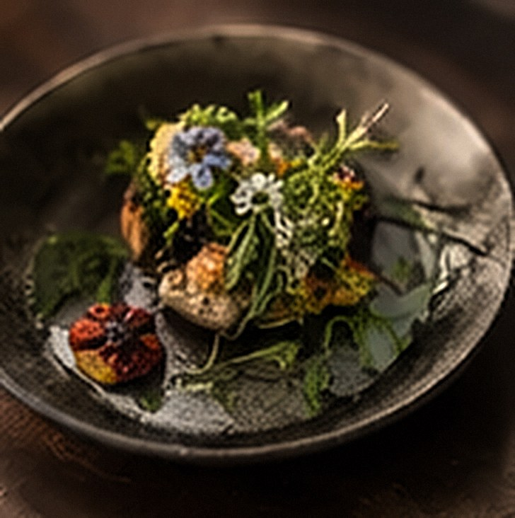

6–20 guests
Private Dining
A seasonal set menu for intimate gatherings.
Each menu is thoughtfully crafted around the season, your occasion and Cubo’s cross-cultural approach to Australian produce and Asian heritage.
Cubo Introduction
A first taste of Cubo: our signature style across three courses.
Cubo Seasonal Expedition
Built around what is at its best this season.
Cubo Culinary Journey
A deeper look into Cubo’s kitchen, led by technique and layered flavour.
Cubo Signature Heritage Journey
Our most distinctive menu: foraged ingredients, heritage techniques and stories passed through generations.